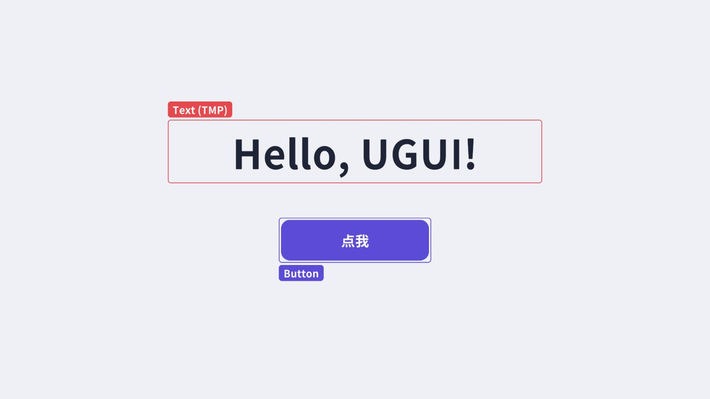
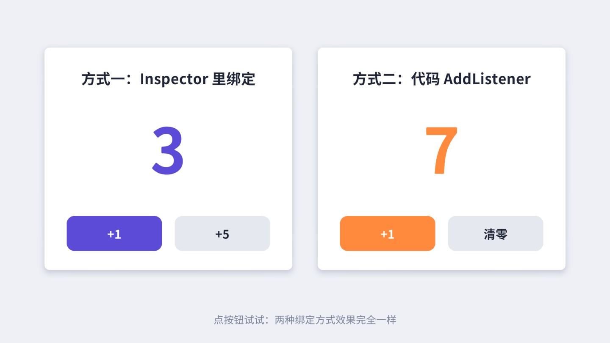
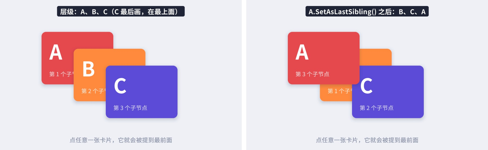
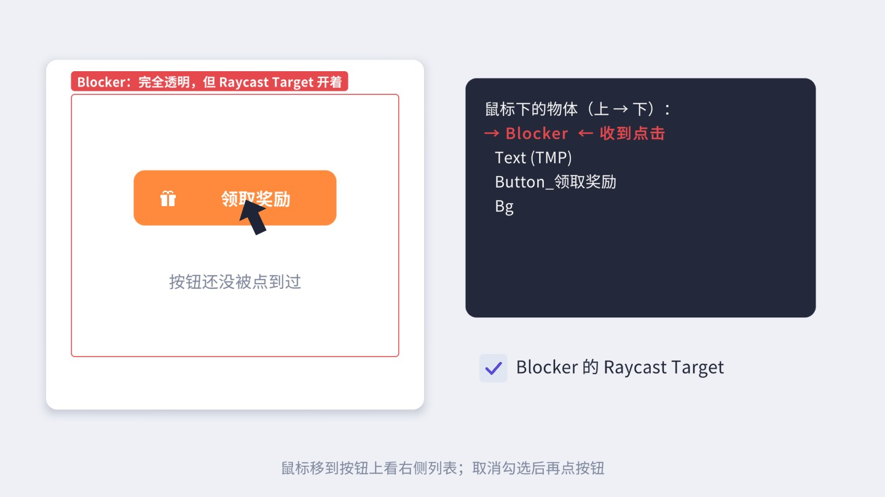

这一章从零开始：先弄清 Unity 里为什么有三套 UI、本书为什么选 UGUI，然后打开配套工程，在编辑器里亲手搭出一个主菜单，让按钮真的能点、页面真的能切换。最后把新手最容易踩的五个坑一次讲清楚。
第一次在 Unity 里找“做界面”的功能，很多人会被搞糊涂：菜单里有 ，又有 ，网上的老教程里还在写 OnGUI()。它们其实是 Unity 在不同年代推出的三套 UI 系统，到今天三套都还在，各有各的位置。
IMGUI（Immediate Mode GUI，立即模式 GUI）是最早的一套。它没有“控件对象”的概念，每一帧在 OnGUI() 里调用 GUILayout.Button("确定")，函数返回 true 就表示这一帧按钮被点了。界面完全由代码每帧重新“画”一遍，写调试面板、编辑器小工具非常顺手，但做游戏界面就很吃力：没法所见即所得地摆位置，美术无从下手，性能也不适合复杂界面。今天它主要活在 Unity 编辑器扩展里（老式的 Inspector 和 EditorWindow），游戏运行时基本只用来画调试信息。
UGUI（Unity GUI，也常写作 uGUI）是 Unity 4.6（2014 年）推出的那套，也就是本书的主角。它的思路和 Unity 的场景一致：界面是由一个个 GameObject 组成的，每个元素挂着 Image、Text、Button 之类的组件，在 Scene 视图里拖拽摆放，在 Inspector 里调参数，用预制体（Prefab）复用。UI 元素和 3D 物体可以放在同一个场景、同一套层级里，可以挂自己写的 MonoBehaviour，可以用 Animator 做动画——你会的 Unity 知识几乎全部能用上。
UI Toolkit 是 Unity 2019 之后主推的新一代 UI，写法借鉴了网页：用 UXML 描述结构（类似 HTML）、USS 描述样式（类似 CSS）、Flexbox 做布局。Unity 编辑器自身的界面正逐步迁到它上面；从 2021 版起它也能用于游戏运行时。它在“大量数据驱动的工具界面”上很有优势，但在游戏运行时界面方面，截至本书锁定的 2022.3 版本，它还缺一些 UGUI 早已成熟的能力（例如与 3D 场景、粒子、Shader 的自由混排，World Space 界面的支持也有限），社区积累的方案和插件也远没有 UGUI 多。
| 对比项 | UGUI | UI Toolkit | IMGUI |
|---|---|---|---|
| 界面由什么组成 | GameObject + 组件 | VisualElement 树（UXML） | 每帧调用的绘制函数 |
| 怎么摆位置 | RectTransform + 锚点，Scene 视图里拖 | Flexbox 布局 + USS 样式 | 代码里写坐标或 GUILayout 自动排 |
| 主要用途 | 游戏运行时界面（主流） | 编辑器工具、数据型运行时界面 | 编辑器扩展、调试面板 |
| 和 3D/粒子混排 | 容易（三种渲染模式） | 受限 | 只能盖在最上层 |
| 源码 | C# 源码随包提供，可直接读 | 大部分在引擎内部 | 引擎内部 |
本书选择 UGUI，理由很实际：绝大多数线上手游、独立游戏的运行时界面都是 UGUI 做的，招聘要求里写的“熟悉 UGUI”指的就是它；它的 C# 源码完整地随包分发，读得懂源码就能真正理解“为什么会这样”，这也是本书第三部分的重点。第 21 章会再回头讨论 UGUI 与 UI Toolkit 怎么取舍、怎么迁移。
UGUI 的代码不在引擎内核里，而是以一个 Package（包）的形式提供，包名 com.unity.ugui。本书锁定 Unity 2022.3.62f3，对应的 ugui 包版本是 1.0.0。打开 ，在 “Packages: In Project” 列表里能看到 “Unity UI”，那就是它。
包被导入工程后，源码会被解压到工程目录下的 Library/PackageCache/com.unity.ugui@1.0.0/。其中 Runtime/UI/Core/ 是各种控件和图形（Image.cs、Button.cs、Graphic.cs……），Runtime/EventSystem/ 是事件系统，Editor/ 是编辑器部分（比如菜单 的实现就在 Editor/UI/MenuOptions.cs）。在 IDE 里对任意 UGUI 类按“转到定义”也能直接跳进这些文件。文字组件 TextMeshPro 是另一个包 com.unity.textmeshpro（本书用 3.0.7），第 5 章细讲。
Canvas、CanvasRenderer、RectTransform 这三个类是引擎原生组件，看不到源码。包里的 C# 代码负责“算出要画什么”，原生层负责“合批并真正画出来”。第 12 章会把这条分界线讲清楚。本书每一张截图都是在配套工程里实拍的，每一个有交互的案例都有一个可以直接运行的场景。建议你一边读一边打开对应场景点一点、改一改参数，比只看书有效得多。
D:\UnityProjects\UGUIBook。解压后的文件夹里应当能看到 Assets、Packages、ProjectSettings 三个目录。Assets 的那一层）。在列表里确认编辑器版本是 2022.3，然后点击打开。第一次打开要导入资源、编译脚本，几分钟是正常的。Assets/UGUIBook/Ch01/Scenes/，双击任意场景打开，点 Play 运行。每章的代码都在 Assets/UGUIBook/ChNN/（NN 是两位章号），书里代码块标题上写的路径就是它在工程里的位置，比如“Assets/UGUIBook/Ch01/ClickCounter.cs”。场景都在 ChNN/Scenes/，正文里用“配套场景”标签标出来。场景里一般会有一行灰色提示文字，告诉你该怎么操作。
_Core/Runtime/UIKit.cs 是本书写的一个小工具类，作用是用代码搭 UI：UIKit.Button(parent, "开始游戏") 创建一个按钮、UIKit.Text(parent, "标题", 48) 创建一段文字、rt.Place(x, y, w, h) 设置位置和尺寸。它内部调用的是 Unity 自己的 DefaultControls / TMP_DefaultControls——也就是编辑器菜单 背后的同一套代码——所以它搭出来的控件，层级结构和你在编辑器里手动创建的完全一样。配套场景都是它搭的，你在书里看到“步骤”时，按步骤在编辑器里手动搭，得到的结果是一样的。读完第 3 章之后，回头读一读 UIKit.cs，会是很好的练习。
Assets/ 下另建的文件夹里，别和 UGUIBook 混在一起。做 UI 时最常打交道的是四块面板：Hierarchy（层级）、Scene（场景视图）、Game（游戏视图）和 Inspector（检视器）。图 1-2 标出了做 UI 时要特别留意的几个按钮。
UI 是平面的，在 3D 透视视角下摆 UI 很别扭。点 Scene 视图工具栏上的 2D 按钮，视角会变成正对 XY 平面的正交视图。选中 Canvas 后，把鼠标移到 Scene 视图里按 F（Frame Selected），视图会缩放到正好框住整个画布。滚轮缩放、按住鼠标中键（或右键）拖动平移。
刚开始你会发现 Canvas 在 Scene 视图里大得离谱：默认的 Overlay 画布里 1 个 UI 单位等于 1 个屏幕像素，1920×1080 的画布在场景里就是 1920×1080 个单位宽，而一个默认 Cube 只有 1 个单位。这是正常的，Overlay 画布根本不经过相机，它在场景里的位置和大小只是给你编辑用的，和 3D 物体没有空间关系。第 2 章讲渲染模式时会细说。
工具栏上第五个工具（快捷键 T）叫 Rect Tool。选中一个 UI 元素后，它会在元素四周画出蓝色的角点和边，拖动角点改尺寸、拖动内部移动位置、把鼠标放在角点外侧一点会变成旋转光标。中间那个小圆圈是轴心（Pivot），四个小三角是锚点（Anchor）——这两样东西第 3 章会专门讲。做 UI 时请始终用 Rect Tool，而不是 Move/Scale Tool：用 Scale Tool 拉大一个按钮，改的是 localScale 而不是尺寸，文字会跟着被拉伸变形，子元素的布局也会乱，这是新手常见的错误。
Game 视图左上角有一个分辨率下拉框，默认是 “Free Aspect”——Game 窗口多大，屏幕就多大。做 UI 时一定要把它固定成目标设备的分辨率或宽高比，否则你拖拽窗口大小时界面会一直变，很难判断布局到底对不对。点下拉框底部的 +，Type 选 Fixed Resolution，填入 1920×1080（横屏）或 1080×1920（竖屏），起个名字保存。也可以选 Aspect Ratio 类型只固定宽高比。平时至少准备 16:9、4:3、21:9 和一个竖屏四档，频繁切换着看，第 2 章会用到。
如果你要做手机游戏，Game 视图标题栏左边还有一个 Game / Simulator 切换。切到 Simulator 后可以选择具体机型，它会模拟真机的分辨率、刘海和安全区，第 3 章的安全区案例会用到它。
我们先不做任何复杂的事，只放一行字和一个按钮，看看 Unity 到底帮我们创建了什么。
Text (TMP)，Unity 还自动创建了一个 Canvas 把它包在里面，并且在根部多了一个 EventSystem。
这个场景的层级如下。注意按钮本身是 Image + Button，它下面还有一个子物体专门显示文字——UGUI 的控件大多是“几个简单组件拼起来”的，这一点后面每一章都会反复看到。
新建第一个 UI 元素时自动生成的这几样东西，每一个都有明确的分工：
把这几个角色串起来，就是一次点击从硬件到你的代码的完整旅程（图 1-4）。现在只需要有个整体印象，第 11 章会对着源码把每一步拆开讲。
UI，它的 Transform 也变成了 RectTransform——UGUI 里所有元素都用 RectTransform 而不是普通 Transform，因为它们需要“矩形”的概念（宽、高、锚点）。另外，Overlay 模式画布的 RectTransform 是被 Canvas 接管的：位置和尺寸灰掉不能改，大小永远等于屏幕（除以缩放系数）。选中 Text (TMP) 或按钮，看看 Inspector：最上面是 Rect Transform，然后是一个没有任何参数的 Canvas Renderer，再往下才是 Image、TextMeshPro - Text (UI)、Button 这些“真正干活”的组件。它们的关系是这样的：
Graphic，负责“画什么”：生成顶点、指定颜色和材质。Raycast Target 开关也定义在 Graphic 上。
交互组件Button、Toggle、Slider 等继承自 Selectable，负责“怎么响应”：状态切换、导航、事件回调。它们本身不画任何东西，通过 Target Graphic 字段去改某个 Graphic 的颜色或精灵。
理解了这个分工，很多现象就说得通了：按钮能被点到，靠的不是 Button 组件，而是同一物体（或子物体）上开着 Raycast Target 的 Image；把 Button 组件删掉，图片还在；把 Image 删掉，按钮就“隐身”且点不到了。一个空物体加一个 Button 组件，是点不到的。
UGUI 没有“Z 轴前后”或“图层编号”这样的属性来决定谁盖住谁（同一画布内）。规则只有一条：按 Hierarchy 里从上到下的顺序依次绘制，后画的盖住先画的。父物体总是先于它的子物体绘制，同一父物体下的子物体按排列顺序绘制，整棵树就是一次深度优先遍历。
这条规则带来几个直接的推论：
UIKit.Card 那样建一个空父节点，把阴影和底图都放进去、阴影在前。transform.SetAsLastSibling()（移到同级最后，即最上层）、SetAsFirstSibling()（移到最前，即最底层）、SetSiblingIndex(i) 和 GetSiblingIndex()。界面里大量的“显示/隐藏”是靠 gameObject.SetActive(bool) 完成的：设置页、弹窗、提示，不用时关掉，要用时打开。关于激活状态，有两个属性一定要分清：
SetActive 改的就是它。
activeInHierarchy这个物体实际上是否处于激活状态：它自己开着，并且所有祖先也都开着，才是 true。父物体被关掉时，子物体的 activeSelf 不变，但 activeInHierarchy 变成 false，在 Hierarchy 里显示成灰色。
SetActive(false) 之后，物体上的所有组件都会收到 OnDisable，Update 不再执行，UI 不再绘制，也不再响应点击；再 SetActive(true) 时会收到 OnEnable。对 UI 来说，激活和关闭不是免费的：重新激活时，Canvas 需要重新计算这批元素的布局和网格。对于频繁开关的界面（比如每秒闪烁几次的提示），第 20 章会对比 SetActive、CanvasGroup.alpha、关闭 Canvas 组件等几种隐藏方式的开销。入门阶段，用 SetActive 就对了。
目标：做出一个游戏主菜单：全屏背景图、大标题、竖排的“开始游戏 / 设置 / 退出”三个按钮，左下角显示版本号。这一节只关心“摆出来”，交互在后面几个案例里加。
思路：按“从后往前”的顺序搭：先放背景（最先画），再放标题和按钮，最后放版本号。背景铺满全屏，其余元素各自靠在屏幕的某个位置。“靠在某个位置”靠的是锚点，第 3 章才会细讲，这里先照着步骤用锚点预设面板点一下即可。
bg_landscape），把 Raycast Target 的勾去掉（背景不需要接收点击，1.7 节会解释为什么要关）。在 Rect Transform 左上角点开锚点预设面板，按住 Alt 点右下角那个“四向拉伸”的图标，背景就铺满了整个画布。搭好后的层级是这样的（配套场景里多了一个 AspectRatioFitter，用来让背景图保持 2:1 的比例铺满屏幕而不被拉扁，第 10 章介绍它）：
常见坑：一是忘了换 Canvas Scaler 模式，在 1920×1080 下看着正好，换到高分屏上按钮突然变得很小；二是用 Scale Tool（R）去拉按钮，结果文字被拉变形；三是背景放到了按钮后面（层级下方），把按钮整个盖住。遇到“东西不见了”，先看 Hierarchy 顺序。
目标：点按钮让数字加一。用两种方式实现：左边在 Inspector 里绑定，右边用代码 AddListener。效果完全一样，但适用场合不同。

Button 组件最下面有一个 On Click () 列表，它的类型是 UnityEvent——一种可以在 Inspector 里配置“要调用谁的哪个方法”的事件。先写一个脚本，提供一个 public 方法：
ClickCounter 脚本挂到左边卡片（Card_Inspector）上，把显示数字的 TMP 文字拖到它的 Label 字段。能出现在下拉框里的方法有限制：必须是 public、返回 void，参数最多一个，且类型只能是 int、float、string、bool 或某种 UnityEngine.Object。所以 Add(int) 能选、能填参数，而一个需要两个参数的方法就选不了。
onClick 本身就是一个 UnityEvent，AddListener 往里面加一个回调，RemoveListener 移除。几个要点：
[SerializeField] 字段在 Inspector 里拖进来，而不是用 GameObject.Find("Button") 按名字找。按名字找既慢又脆弱，改个名字就断了。AddListener(() => SetCount(0)) 每次写都会生成一个新的委托对象，之后无法用 RemoveListener 精确移除它，只能 RemoveAllListeners()（这只会清掉运行时监听，Inspector 里配的那些不受影响）。需要单独移除的回调，请写成具名方法，比如 OnAddClicked。| 对比 | Inspector 绑定 | 代码 AddListener |
|---|---|---|
| 谁能改 | 策划、美术在编辑器里就能改 | 只有程序员改代码 |
| 可见性 | 一眼看到按钮会调用什么 | 要读代码才知道 |
| 重构安全 | 方法改名后绑定会静默失效（Missing） | 改名时编译器会报错 |
| 参数 | 最多一个简单参数 | 任意，可以用 Lambda 捕获变量 |
| 适合 | 简单、固定的跳转和开关 | 大多数正式项目的界面逻辑 |
实际项目里，代码绑定更常见：界面逻辑集中在一个脚本里，查找、调试、重构都方便。Inspector 绑定适合原型阶段和简单的场景跳转。两种可以混用——Button 被点击时，先调用 Inspector 里配置的（persistent）监听，再调用代码加的监听。第 6 章还会讲循环里 AddListener 的闭包陷阱。
目标：点“设置”进入设置页，点左上角返回按钮回到主菜单；按 Esc（安卓手机的返回键）也能返回。
思路：最朴素也最可靠的做法是把每个“页面”做成 Canvas 下的一个铺满全屏的空物体，页面的内容都放在它下面；切换页面就是对这些页面根节点 SetActive。层级如下，灰色表示当前未激活：
页面根节点用空物体（只有 RectTransform）而不是 Image，是因为它只是一个“容器”，自己不需要显示任何东西；它铺满全屏（锚点四向拉伸），子元素就能以整个屏幕为参照摆放。所有逻辑放在一个 MenuController 里：
ShowPage 的写法是“要显示的那个打开，其余都关掉”，而不是“打开 A、关掉 B”。好处是不用关心当前在哪一页，调用多少次结果都正确。页面多起来以后，可以把页面放进数组循环处理；再复杂一些（需要返回栈、弹窗层级、预制体加载），就需要第 16 章的 UI 框架了。
注意 Awake 最后两行：运行时的初始状态由代码决定，而不是依赖场景保存时“恰好”是什么样。编辑界面时你经常会把设置页打开来调，保存时忘了关——有了这两行，运行时总是从主菜单开始。
CanvasGroup 组件，用 alpha 控制整页透明度、用 interactable 和 blocksRaycasts 控制整页能否交互。它的好处是可以做淡入淡出动画（第 15 章），隐藏时也不会触发 OnDisable/OnEnable；代价是隐藏的页面仍然参与布局计算和部分绘制流程。两者的开销对比放在第 20 章，入门阶段先用 SetActive。安卓手机的系统返回键在 Unity 里被映射为 KeyCode.Escape，所以这段代码在 PC 上按 Esc、在安卓上按返回键效果相同。处理顺序是“先关最上层的东西”：有弹窗先关弹窗，在子页面就回主页面，已经在主页面就询问是否退出。这是手机游戏非常重要的体验细节，审核时也常被检查。
Input.GetKeyDown。配套工程的 Active Input Handling 设置为 Both（新旧输入系统同时启用），所以能用。如果你的项目只启用了新 Input System，需要改用 Keyboard.current.escapeKey.wasPressedThisFrame 等写法，详见第 11 章。目标：点“退出”弹出确认框，点“取消”关闭确认框，点“退出”真正退出游戏；在编辑器里点退出则停止 Play 模式。
确认框（QuitDialog）由两部分组成：一张铺满全屏的半透明黑色 Image（Mask），和它上面居中的卡片（文字 + 两个按钮）。这张黑色遮罩有两个作用：视觉上把后面的菜单压暗，让人注意力集中在对话框上；更重要的是它开着 Raycast Target，挡住了后面所有按钮的点击——确认框开着的时候，你点不到后面的“开始游戏”。这就是“模态对话框”的最简单实现。QuitDialog 放在层级的最后面，保证它画在最上层、也最先被射线命中。
Application.Quit() 在编辑器的 Play 模式下会被忽略，所以测试时点了没反应，很多人以为代码写错了。上面用条件编译区分平台：UNITY_EDITOR 在编辑器里为真，此时把 EditorApplication.isPlaying 设为 false 来停止运行。注意 UnityEditor 命名空间只在编辑器里存在，运行时代码引用它必须用 #if UNITY_EDITOR 包起来，否则打包时会编译失败。
不同平台的“退出”还有讲究：
Application.Quit 的行为也和其他平台不同。iOS 版本的游戏通常直接不显示退出按钮。OnApplicationQuit 里，它在真正退出前会被调用）。在 MenuController 里，“退出”按钮只负责打开确认框，确认框里的“退出”才调用 QuitGame.Quit——直接把静态方法作为回调传给 AddListener，签名匹配（无参、返回 void）即可。
目标：三张互相重叠的卡片，点哪张，哪张就跑到最上面。

这个脚本实现了 IPointerDownHandler 接口：只要物体（或它的子物体）上有能接收射线的图形，按下时 EventSystem 就会调用它的 OnPointerDown。它不需要 Button 组件——Button 本身也只是实现了几个类似的接口而已（第 6、11 章）。
脚本挂在卡片根节点 Card_A 上，而真正被射线打中的是它下面的 Bg 图片。事件会从被打中的物体开始沿着父链向上找，找到第一个实现了该接口的组件就交给它处理。所以把交互脚本挂在一组 UI 的根节点上，点到这一组里的任何图形都能触发。
运行场景，点 A，再观察 Hierarchy：Card_A 跑到了 Cards 节点的最后。注意 SetAsLastSibling 只在同一个父节点的兄弟之间调整顺序：如果三张卡片分属不同的父节点，只调卡片本身是不够的，要调整的是它们父节点之间的顺序。
“按钮点了没反应”大概是 UGUI 问得最多的问题。原因五花八门，但最常见的就是下面五个，按出现频率排列。遇到问题时从第一个查起。
通过菜单创建第一个 UI 元素时 Unity 会自动建 EventSystem，但下面这些情况会让它“消失”：手动删掉了；从别的场景拷贝 Canvas 时没拷 EventSystem；用代码 new GameObject 搭界面；以预制体形式加载 UI。没有 EventSystem，所有 UI 都不会有任何反应——按钮连鼠标悬停变色都没有。这是一个很好的判断依据：悬停都不变色，先查 EventSystem。
反过来，场景里有两个 EventSystem 也不行（常见于叠加加载多个场景时），Unity 会在 Console 里报警告，只有一个会生效。正确的做法是在常驻场景里只放一个，或者像 UIKit.EnsureEventSystem() 那样“没有才建”。
这是最隐蔽的一个。一张 Alpha 为 0 的 Image 你看不见它，但它照样参与射线检测：Graphic Raycaster 判断的是“鼠标是否落在这个图形的矩形内”，并不关心像素是否透明（除非专门设置了 alphaHitTestMinimumThreshold，第 4 章）。常见的元凶有：一个铺满全屏、颜色透明的 Panel；文本框的矩形比文字本身大很多，盖到了旁边的按钮；隐藏界面时只把 Alpha 设成了 0 而没有关掉射线。
每个 Graphic（Image、RawImage、Text、TMP 文字）的 Inspector 里都有一个 Raycast Target 勾选框，默认开启。它决定这个图形能不能“接住”射线。和坑二相关的两个方向都可能出问题：
UIKit.Text 和 UIKit.Icon 默认就是关闭的，第 21 章还有一个一键清理的编辑器工具。这个坑只出现在 Screen Space - Camera 和 World Space 模式（第 2 章）。Camera 模式下画布放在相机前方 Plane Distance 的位置，如果这个距离超出了相机的远裁剪面（Far Clipping Plane），或者小于近裁剪面，整个界面就消失了；没给 Render Camera 赋值时，Camera 模式的画布会退化成 Overlay 的行为。World Space 模式下画布就是 3D 世界里的一块板，转到相机背后、离得太远、缩放不对（从 Overlay 切过来时画布还保持着屏幕像素大小，1 个单位 1 米，一千多米宽），都会“看不见”或“点不到”；而且 World Space 画布需要设置 Event Camera 才能正确接收点击。
“Game 视图里有，Scene 视图里找不到”通常是这几种情况：一是 1.3 节说的尺寸问题，Overlay 画布在 Scene 视图里有一千多个单位大，你还在看那个 1 单位大的 Cube，选中 Canvas 按 F 就行；二是 Scene 视图右上角的 Layers 下拉里把 UI 层隐藏了；三是 Hierarchy 里点了物体左侧的“眼睛”图标把它在 Scene 视图里隐藏了（这只影响 Scene 视图，不影响游戏）；四是 Scene 视图不在 2D 模式，你正从侧面看着一块薄片。
目标：做一个小工具，实时列出鼠标下面所有能接收射线的 UI 元素，从上到下排列，第一个就是会收到点击的那个。用它来复现并解决坑二。

场景左边有一个“领取奖励”按钮，上面盖着一张看不见的图片 Blocker（颜色 Alpha 为 0、Raycast Target 开着）。运行后点按钮，没有任何反应，按钮连悬停高亮都没有。把鼠标移到按钮上，右侧列表告诉你：最上面的是 Blocker。取消勾选下方的 “Blocker 的 Raycast Target”，再点按钮，就能点到了。
核心就一行 es.RaycastAll(data, results)：EventSystem 用给定的指针位置询问场景里所有的 Raycaster，把命中结果按“谁在最上面”排好序放进列表，排序规则综合了相机深度、Canvas 的排序层级和元素的绘制深度（第 11 章读源码）。输入模块处理点击时用的正是同一个方法，取第 0 个结果作为点击目标，所以这个列表的第一项一定就是会收到点击的那个物体。
细心的话你会看到列表里还有 Text (TMP)：按钮里的文字也开着 Raycast Target——用菜单创建的 TMP 按钮默认如此。它在按钮之上，鼠标点在文字上时射线先命中文字，但文字本身不处理点击，事件沿父链向上交给了 Button，所以并不影响使用。不过它确实是多余的射线目标，养成习惯把它关掉。
pointerEnter 就是鼠标下最上层的物体（Inspector 底部预览区默认可能是折叠的，拖出来即可）。第 21 章会做一个更完整的调试工具。Library/PackageCache/com.unity.ugui@1.0.0/。Assets/UGUIBook/ChNN，场景在 ChNN/Scenes；UIKit 是用代码搭 UI 的辅助类。BringToFront 让它在这种结构下也能工作。Library/PackageCache/com.unity.ugui@1.0.0/Runtime/UI/Core/Button.cs，找到按钮被点击时调用 onClick.Invoke() 的地方，看看它在调用之前检查了哪些条件。